| Dr. Brian Walton |
|---|
| James Madison University |
Scripting/Programming Language: R
Data Analysis Application: RStudio
Document Format: Quarto
Atomic data
whole numbers
decimal and scientific notation
TRUE/FALSE
simple text
Complex data
ordered collection of single data type
ordered collection of multiple data types
table of data where columns are vectors (same data type)
Variable name: human reference to location in computer memory
Assignment:
name <- [expression result to store]
[expression result to store] -> name
Later expressions can use the variable name and the currently stored memory value will be used
Integrated Development Environment (IDE)
File editor
R scripts (with debugger)
Quarto documents (merge formatted written documents with embedded computations)
Live R session
Data environment (inspect variable memory), package manager, plot viewer
Help system
Markdown is a plain text method to indicate how text should be formatted.
# or ## or ### for headers (with levels)
_word_ or *word* to underline
**word** to bold
$formula$ for inline math and $$formula$$ for display math
`code` for inline code
Two sections with headers (level 1). One of the sections should have two subsections with headers (level 2).
Include a paragraph that includes some words that are bolded and others that are underlined. Can you get some that do both?
Add a mathematical formula on its own line (displaymath) that shows \(\displaystyle y=ax^2+bx+c\)
Include code
x <- 12
a <- 1
b <- -2
c <- 3
y <- a*x^2+b*x+c
Data: information gathered with surveys and experiments
Statistics: the art and science of learning from data
Statistical investigative process:
formulate a statistical question
collect data
analyze data
interpret and communicate results
Design: State goal/question and plan how to collect data
Description: Summarize and analyze the data
Inference: Make decisions and predictions to answer question
Builds on a foundation of probability, which is a framework for quantifying how likely various possible outcomes are.
individual entity in a study
total set of subjects in which we are interested
subset of population for whom we have data
Learning goal: Be specific and precise about describing these three terms.
The purpose was to predict the outcome of the 2010 gubernatorial election in California.
An exit poll sampled 3,889 of the 9.5 million people who voted. Define the sample and the population for this exit poll.
Refers to methods for summarizing the collected data. Summaries consist of graphs and numbers such as averages and percentages.
Refers to methods of making decisions or predictions about a population based on data obtained from a sample of that population.
What makes this descriptive? The graph shows the result of a survey of 743 teenagers (ages 13-17) about their handling of screen time and distraction. (Fig 1.1 from textbook)
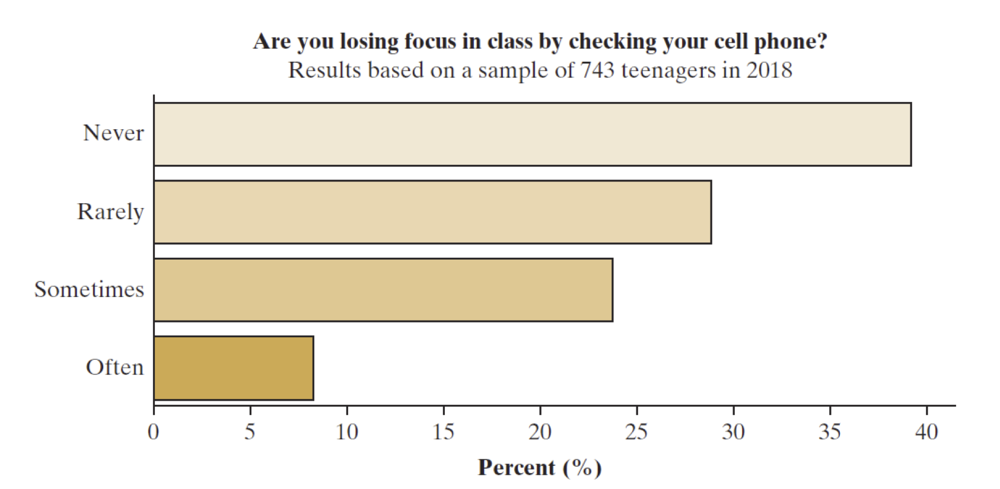
What makes this inferential?
We’d like to investigate what people think about banning single-use plastic bags from grocery stores. We can study results from a January 2019 poll of 929 New York residents.
In that poll, 48% of the sampled subjects said they would support a state law that bans stores from providing plastic bags.
We can predict with high confidence (about 95% certainty) that the percentage of all New York voters supporting the ban of plastic bags falls within 4.1% of the survey’s value of 48%, that is, between 43.9% and 52.1%.
a numerical summary for a population
a numerical summary of a sample taken from the population
randomness and random sampling: essential for using samples to inform us about populations
variability: how observations vary
within a sample: variability among individuals
between samples: variability of statistical results computed from sample
margin of error: how close we expect an estimate to fall to the true parameter value
statistical significance: measure of the strength of evidence, typically measured by probability or likelihood
Types of Data: categorical vs quantitative (discrete and continuous) variables
Describing the distribution of data
relative frequency (categorical)
shape, center and variability (quantitative)
Choosing appropriate graphical representations of data
categorical: bar graph (preferred), pie chart
quantitative: dot plot, stem and leaf plot, histogram, box plot
The fundamental structure of data is in a rectangular table.
Row: refers to an individual subject or experimental replicate.
Column: a single variable representing a specific measurement or characteristic.
Best Practice: a header row states what the variables represent
We import a table to create a data frame
Open a project to have a single folder containing your Quarto file and any data files you work with. The easiest format to use is a CSV file.
read.csv(filename): a basic import routine in R
read_csv(filename): an improved import routine from readr library (tidyverse).
Both routines have optional arguments (other than filename) to customize how the data are read.
The textbook has a website that contains many useful data sets for learning: ArtOfStat.com
Click on Datasets
Look for Chapter 2 data sets and find one named “FL Student Survey”. Download the CSV file and save it to your project directory.
Import the data frame using read.csv("fl_student_survey.csv") or with read_csv (after typing library(readr) to load the library)
The distribution for categorical variables is characterized by the frequency (raw counts) and relative frequency (proportion or percentage) of occurrences of each of the different categories.
To calculate relative frequency or proportion, divide the count of a single category by the total number of observations.
To calculate a percentage, multiply the proportion by 100.
| State | Frequency |
|---|---|
| Florida | 203 |
| Hawaii | 51 |
| S Carolina | 34 |
| California | 33 |
| N Carolina | 23 |
| Texas | 16 |
| Other | 27 |
| Total | 387 |
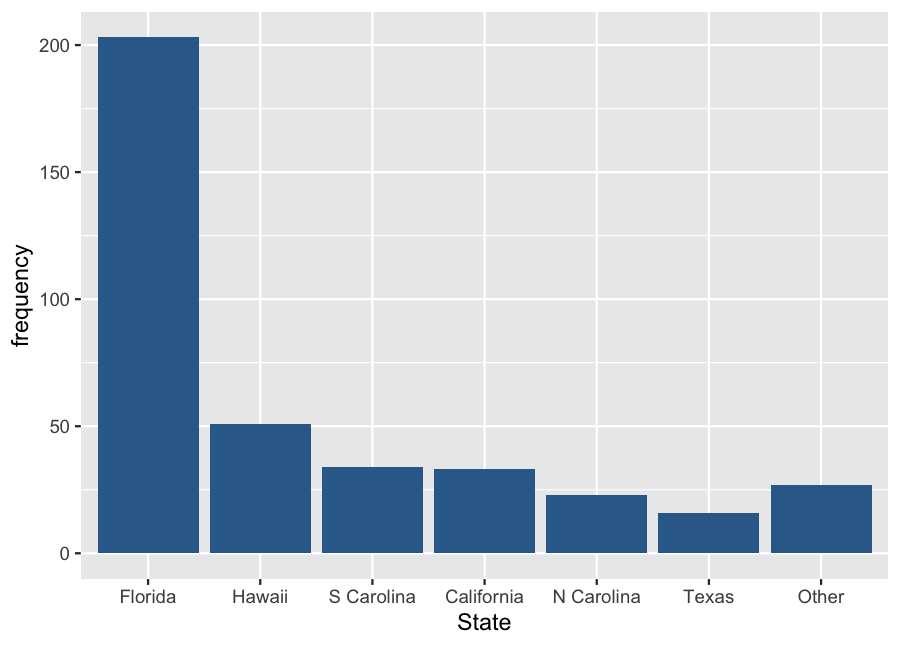
| State | Frequency | Proportion |
|---|---|---|
| Florida | 203 | 0.525 |
| Hawaii | 51 | 0.132 |
| S Carolina | 34 | 0.088 |
| California | 33 | 0.085 |
| N Carolina | 23 | 0.059 |
| Texas | 16 | 0.041 |
| Other | 27 | 0.070 |
| Total | 387 | 1.000 |
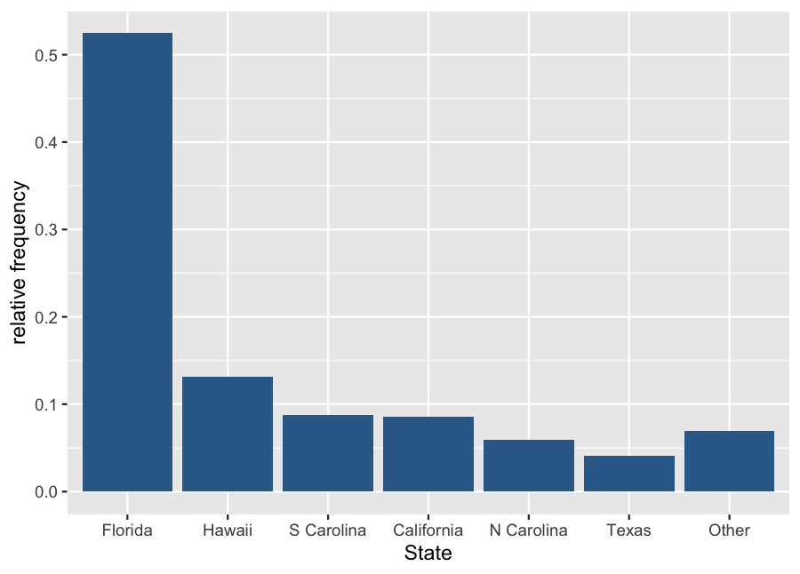
| State | Frequency | Percentage |
|---|---|---|
| Florida | 203 | 52.5% |
| Hawaii | 51 | 13.2% |
| S Carolina | 34 | 8.8% |
| California | 33 | 8.5% |
| N Carolina | 23 | 5.9% |
| Texas | 16 | 4.1% |
| Other | 27 | 7.0% |
| Total | 387 | 100% |
| State | Frequency | Percentage |
|---|---|---|
| Florida | 203 | 52.5% |
| Hawaii | 51 | 13.2% |
| S Carolina | 34 | 8.8% |
| California | 33 | 8.5% |
| N Carolina | 23 | 5.9% |
| Texas | 16 | 4.1% |
| Other | 27 | 7.0% |
| Total | 387 | 100% |
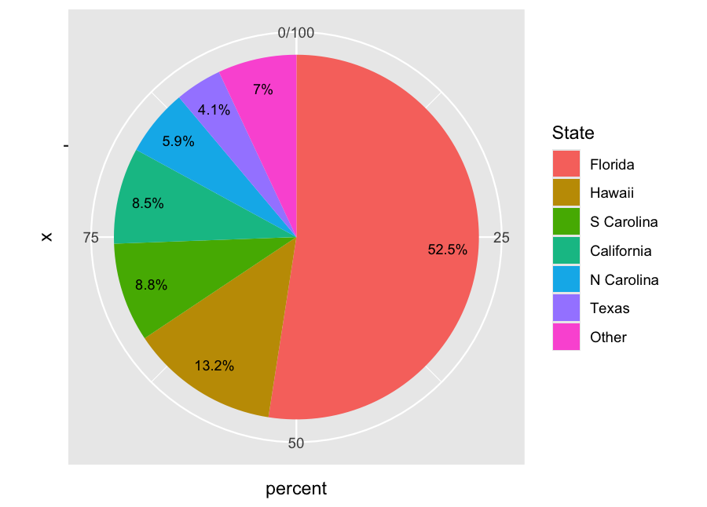
The distribution is characterized by the shape of the relative frequencies that data values appear in intervals (often called bins).
Choose or calculate a bin width for how wide each interval will be.
Create a consecutive partition of intervals that cover the full data.
Decide how to count values appearing exactly on boundaries.
How would you count frequencies of the following data into 5 bins?
10, 12, 12, 15, 18, 20, 21, 21, 24, 28, 32, 32, 35, 36,
40, 42, 45, 48, 48, 52, 56, 56, 58, 60, 64, 70, 72
Not really a graphical display, a stem and leaf plot is a textual method of exploring shape for a relatively small set of data.
stem: leading digits of each value to a specified place value
leaf: next place-value digit in the number
Make a stem and leaf plot using two columns.
Column of sequential stems, including any skipped values
Column of leaves from the data, sorted in order
Using the earlier list of values: 10, 12, 12, 15, 18, 20, 21, 21, 24, 28, 32, 32, 35, 36,
40, 42, 45, 48, 48, 52, 56, 56, 58, 60, 64, 70, 72 Here is the corresponding stem and leaf plot using a stem defined by the tens position.
1 | 02258 2 | 01148 3 | 2256 4 | 02588 5 | 2668 6 | 04 7 | 02
A dot plot is similar to a stem and leaf plot, but instead of using digits to create the plot, we just put solid dots next to each other along an axis. It is also most useful when there is a relatively small number of data points.
For discrete variables, we can often position the dots at exact value positions.
Otherwise, we use bins and position the dots at the center of each bin.
Using the same data and a bin width of 5:
10, 12, 12, 15, 18, 20, 21, 21, 24, 28, 32, 32, 35, 36,
40, 42, 45, 48, 48, 52, 56, 56, 58, 60, 64, 70, 72
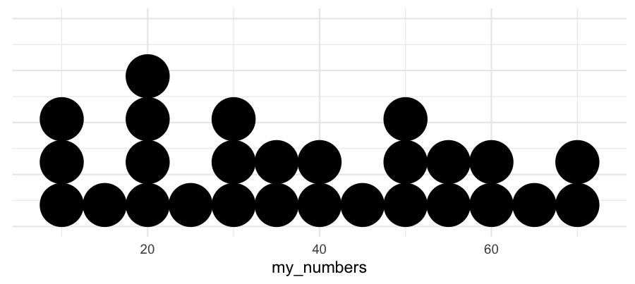
A histogram uses adjacent rectangles to show the distribution based on a partition of bins. The left and right edges of the rectangles illustrate the end-points of each bin. The height of the rectangle matches the frequency.
Using the same data and bin widths of 5 and 10:
10, 12, 12, 15, 18, 20, 21, 21, 24, 28, 32, 32, 35, 36,
40, 42, 45, 48, 48, 52, 56, 56, 58, 60, 64, 70, 72
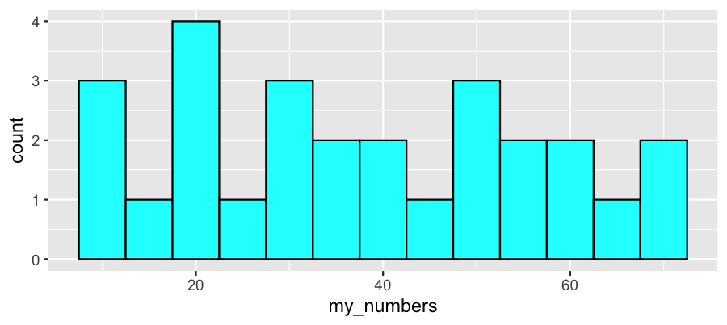
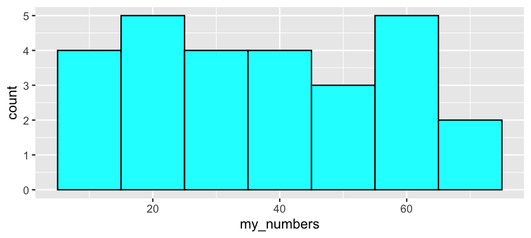
Does the shape have a single predominant mound? Then the distribution is unimodal
Does the shape have a two predominant mounds? Then the distribution is bimodal
Does the shape look like it is reflected over the center? Then the distribution is symmetric. Otherwise it is asymmetric.
Does the shape look it is stretched out more on one side than the other? Then the distribution is skewed.
If the shape stretches from the center (mean/median) further to the right, it is skewed to the right.
If the shape stretches from the center (mean/median) further to the left, it is skewed to the left.
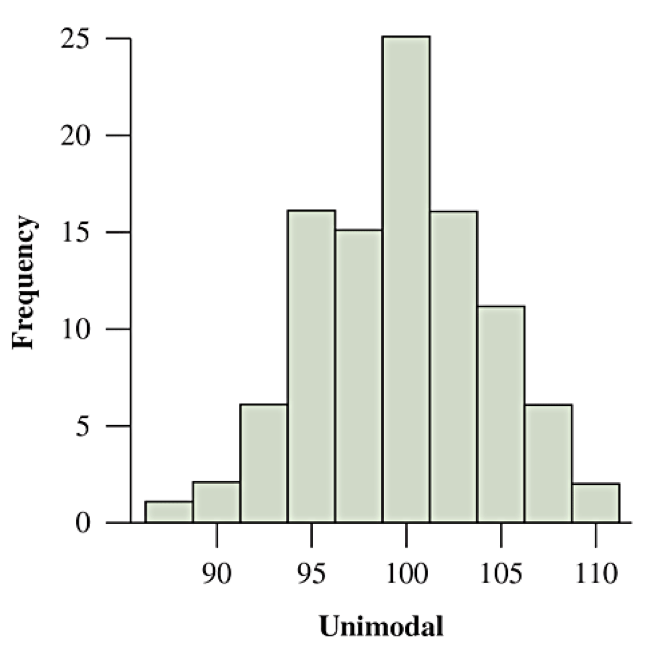
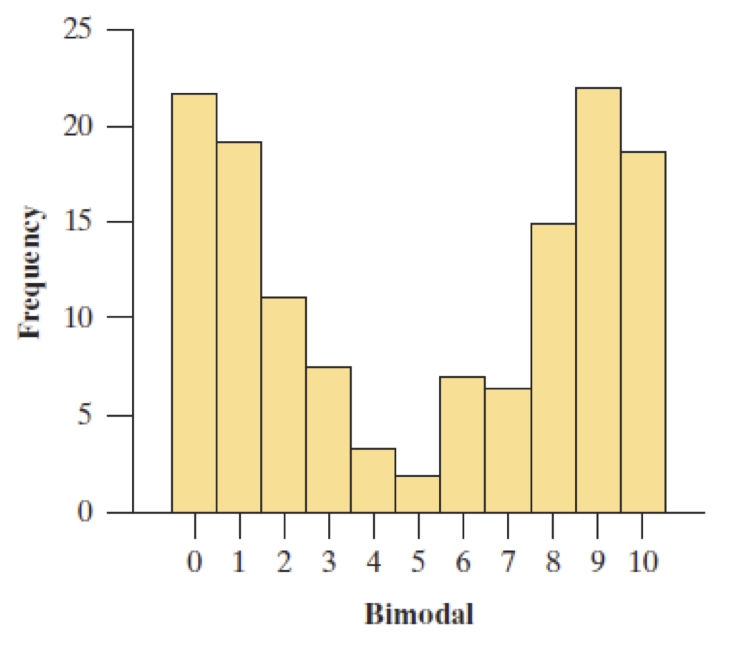
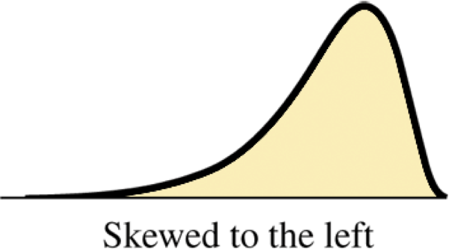
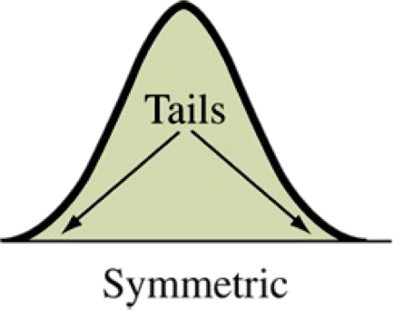
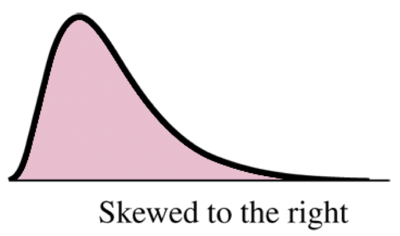
Find the center of the distribution. On which side does the distribution (tails) stretch out further? That is the direction it is skewed.
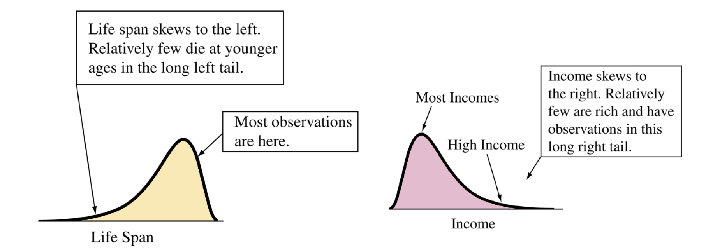
Quantitative data is characterized by the distribution center, variability, and skewness.
Measures of position (center): mean, median, mode. Learn how to identify and compute mean and median and how they are influenced by outliers and skewness.
Measures of variability: range, standard deviation, variance (squared deviation), interquartile range (IQR). Learn how to compute and interpret these measures.
Outliers: Two methods to identify potential outliers are (1) using standard deviation for bell-shaped distributions or (2) using IQR in general.
Draw and interpret boxplots.
Compute and interpret \(Z\) scores, which standardizes measurements relative to the mean and standard deviation
Median: Middle of data values when sorted. 50% above and 50% below.
If an odd number of data points, use the middle value (same number before/after).
If an even number of data points, use the midpoint of the two middle values.
Mean: Average of all values, calculated as the sum of the observations and divided by the number of observations.
Mode: Not really a measure of center, but the mode does measure the position of the value having the highest relative frequency.
The R commands that take a vector x of values and return the center values are literally median(x) and mean(x).
library(readr)
fl_student_survey <- read_csv("[link to file]")
hs_gpa_median <- median(fl_student_survey $ high_sch_GPA)
hs_gpa_mean <- mean(fl_student_survey $ high_sch_GPA)
In a Quarto document, you can perform calculations in a **code** block and save to a variable name in memory. Then we can access the calculated value in our **text** by including `r var_name`. (Actually, any single R expression can replace “var_name”.)
To find the median, we need to either sort the data or create a stem and leaf plot or dot plot to see them sorted. Count the total number of measurements. Count through the list to the half-way point.
To find the mean, add up the measurements. If a number appears multiple times, you need to add it each time (or multiply the value times the number of repeats). Once you have the sum, divide by the number of measurements.
Example data: (Source: cereal.csv sodium values)
0, 340, 70, 140, 200, 180, 210, 150, 100, 130,
140, 180, 190, 160, 290, 50, 220, 180, 200, 210
An outlier is an observation that falls well above or well below the overall bulk of the data.
Because the median depends only on how many measurements are above and below it, it does not depend on the actual values of the highest and lowest values. The median is therefore resistant to outliers.
The mean, however, considers the sum of all values. It is analogous to a center of mass where each measurement is a unit mass on a number line at its value. An outlier therefore can pull the value of the mean toward the outlier. The mean is not resistant to outliers.
When a distribution is skewed, the mean will be shifted in the direction of the skew. For example, a distribution that is skewed to the right will have the mean to the right of the median.
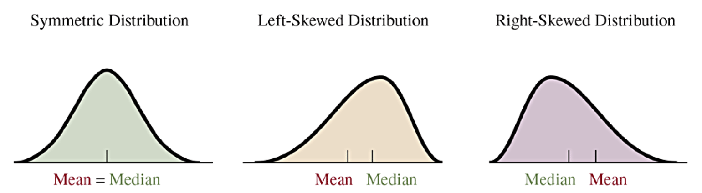
Not as important as the mean and median, the mode is a measure of position. It is not about the center of the data. Instead, it is about the highest frequency value. For a histogram, it would be the center of the bin that has the highest frequency.
It is more common to talk about the mode for categorical data as representing the category that has the highest frequency of observation.
The mean and median give a representation for the center of the distribution for quantitative data. Measurements are spread around the center. We call the idea of spread variability and that observations have deviations from the center.
We need repeatable measures for how to quantify how much variability is in a data set.
range: the total width of the interval including all observations.
deviation: a measure for each observation’s displacement from the mean, \(x - \overline{x}\)
An observation with a positive deviation is above the mean.
An observation with a negative deviation is below the mean.
The sum of all deviations is always equal to 0.
variance: an average of the squared deviations of observations, dividing the sum of squared deviations by \(n-1\text{.}\)
standard deviation: the square root of the variance, and represents a typical scale for the deviations of the data.
Calculate all of the deviations for the set of values \(\{1, 2, 2, 4, 6\}\text{.}\) Then find the variance and standard deviation.
Consider two data sets \(A = \{0,0,0,2,4,4,4\}\) and \(B = \{0,2,2,2,2,2,4\}\) that have the same mean \(\overline x_A = \overline x_B = 2\text{.}\)
\(A\) is bimodal and symmetric with most of the data 2 units away from the mean. \(B\) is unimodal and symmetric with most of the data exactly equal to the mean.
Compare standard deviations:
The value of \(s\) represents a scale of variation. Larger values of \(s\) have greater variability.
\(s=0\) would mean all values are the same.
The units of measurement of \(s\) are the same as for observations. The units of measurement of variance is the square of the units of observations.
Standard deviation and variance are not resistant to outliers. Strong skewness or a few outliers can greatly increase \(s\text{.}\)
Distributions that are unimodal and symmetric with tails that decay away are called often described as bell-shaped. The prototypical bell-shaped distribution is called the normal distribution. We often think of other bell-shaped distributions as being approximated by the normal distribution. (We will study this more later.)
The normal distribution has the following characteristics in relation to the standard deviation:
68% of all observations are within 1 standard deviation of the mean, that is between \(\overline x - s\) and \(\overline x + s\text{,}\) denoted \(\overline x \pm s\text{.}\)
95% of all observations are within 2 standard deviation of the mean, that is between \(\overline x \pm 2s\text{.}\)
99.9% of all observations are within 3 standard deviation of the mean, that is between \(\overline x \pm 3s\text{.}\)
Consequently, for bell-shaped distributions, any observations that are outside of \(\overline x \pm 3s\) would be outliers.
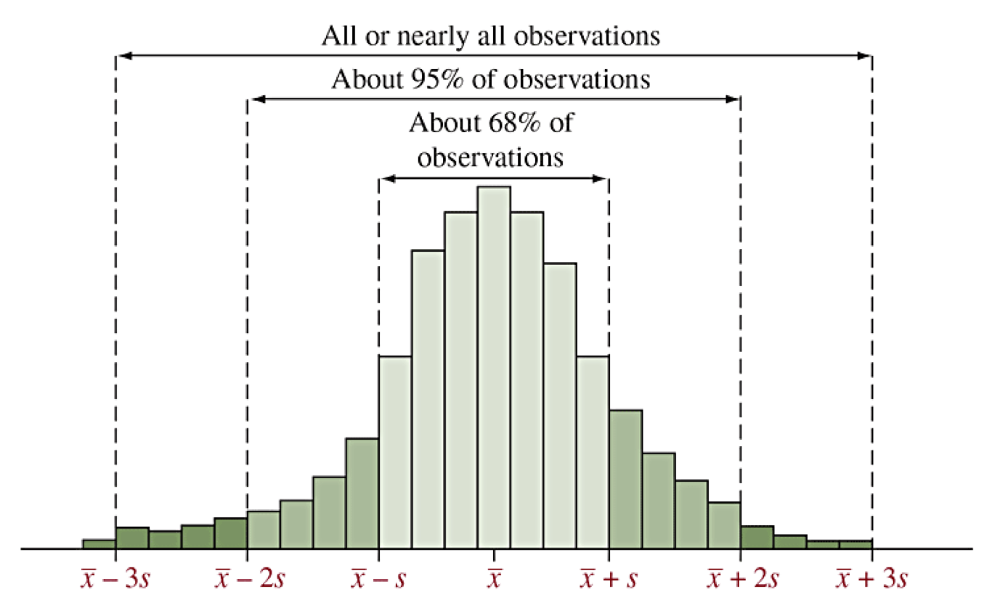
We can transform the deviations to compute Z scores, which measures how many standard deviations are in each deviation using division.
The distribution of Z scores looks the same as the distribution of the original data except that:
The center of Z scores always has mean 0
The standard deviation of Z scores always is 1
While the variance and standard deviation are computed by how far data are from the mean, percentiles (or quantiles) represent positions in the distribution that have some percentage (or proportion) of the data less than that position.
The 25th percentile is a value that has 25% of the data before it. It also happens to be the median of the data before the actual median (which is the 50th percentile).
The 75th percentile is a value that has 75% of the data before it. It is the median of the data after the actual median.
The 0.1 quantile is a value that has 10% of the data before it. The 0.25 quantile is the same as the 25th percentile.
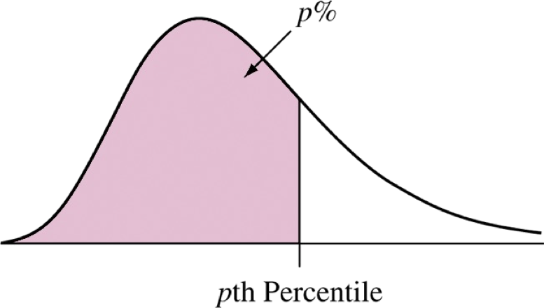
The quartiles split the data into four equal numbers of data points.
\(Q1\) is the first quartile and is the same as the 25th percentile.
\(Q2\) is the second quartile and is the same as the 50th percentile, which is also the median.
\(Q3\) is the third quartile and is the same as the 75th percentile.
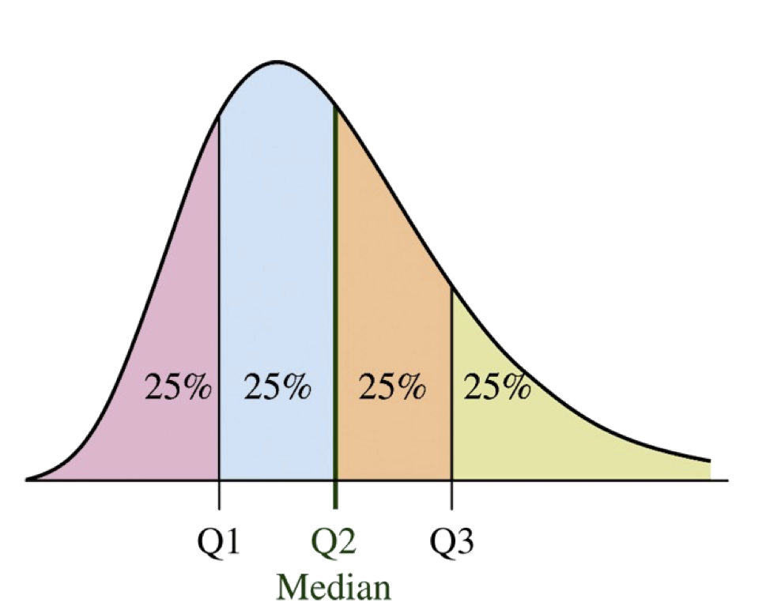
To find the quartiles:
Sort the data or organize them in a stem and leaf plot.
Find the median (Q2).
Find the median of the data less than Q2 to find Q1.
Find the median of the data greater than Q2 to find Q3.
R command: quantile(x) or quantile(x,p).
Note: There are many different rules possible for how to deal with a number of points that does not have equally split.
Find the three quartiles for the sodium data (cereal.csv).
Example data: (Source: cereal.csv sodium values)
0, 340, 70, 140, 200, 180, 210, 150, 100, 130,
140, 180, 190, 160, 290, 50, 220, 180, 200, 210
After defining the percentiles and quartiles, we can define a new measure of variability called the interquartile range (IQR).
For distributions that are not bell-shaped, the IQR can be used to find thresholds for identifying potential outliers.
Values less than \(Q1 - 1.5IQR\) are potential outliers.
Values greater than \(Q3 + 1.5IQR\) are potential outliers.
A box plot (or box and whisker plot) is a graphical representation of the five-number summary for a dataset, (Min, Q1, Q2=Med, Q3, Max). The following description makes a horizontal box plot.
Draw a rectangular bar from Q1 on the left to Q3 on the right. This is the box.
Draw a vertical line inside the box at the median Q2.
Draw a horizontal whisker from the middle of the left side (Q1) to the smallest value that is not an outlier (using the 1.5 IQR rule).
Draw a horizontal whisker from the middle of the right side (Q3) to the largest value that is not an outlier (using the 1.5 IQR rule).
Indicate each outlier (above or below) as individual marks.
boxplot(x). If using ggplot(), then the geometry layer for a box plot is geom_boxplot().Example data sorted: (Source: cereal.csv sodium values)
0, 50, 70, 100, 130, 140, 140, 150, 160, 180,
180, 180, 190, 200, 200, 210, 210, 220, 290, 340
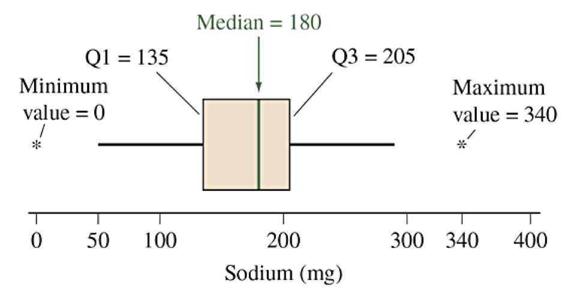
I watched the Men’s Super G Alpine Skiing event and wondered how the times compared to older Olympics and chose the 2002 SLC Winter Games. I extracted the run times for the competitors in each race to create this data set: Men’s Super G Times Data.
Olympics contains the year of the Olympics, Time contains the time of the race in HH:MM:SS.SSS format.
Must import with extra information about the columns or R drops the fractions of seconds on the times. Use read_csv with extra option col_types = "ficcc" (columns are: factor, integer, character, character, character).
Then convert the Time column to a time with more precision than the default.
# Load Libraries: readr, dplyr, lubridate, ggplot2
library(tidyverse)
# Read file forcing character type for Time
superg <- read_csv("link", col_types="ficcc") %>%
# And then mutate the column by interpreting HMS and then converting to seconds
mutate(Time = period_to_seconds(hms(Time)))
# Make the plot
ggplot(data = superg, mapping = aes(x=Time, y=Olympics)) +
geom_boxplot(fill="lightblue") +
labs(title = "Skier Times for Men's Super G Race")
Expectations for good graphs: axes, labels, and showing \(y=0\)
Using easily recognized representations: bars, lines or points
Failures to use effective strategies are often difficult to interpret or intentionally deceiving
Label both axes and provide proper headings.
To compare relative size, it is important to show \(y=0\text{.}\)
Irregular shapes, especially those using different area are difficult to read. Stick with bars, lines, and points. (This includes pie charts.)
If two different groups have drastically different values, don’t try to put them on a single graph. Consider different graphs, or plot relative sizes such as using percentages or ratios.
What do you notice about this figure? (Figure 2.19 from Textbook)
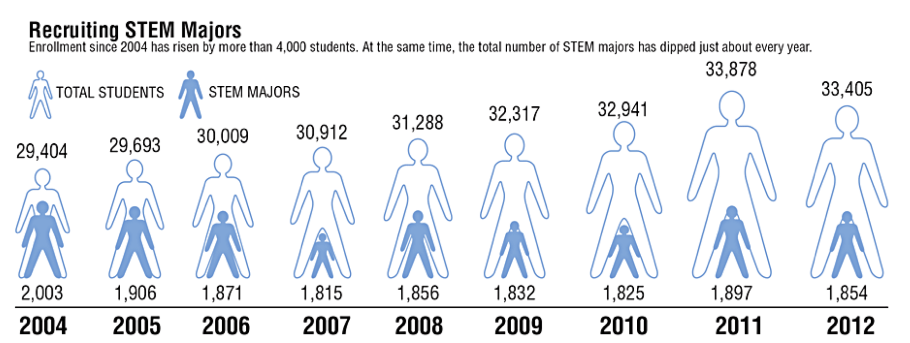
Here is a better graph of the same data. What else could be done? (Figure 2.20 from Textbook)
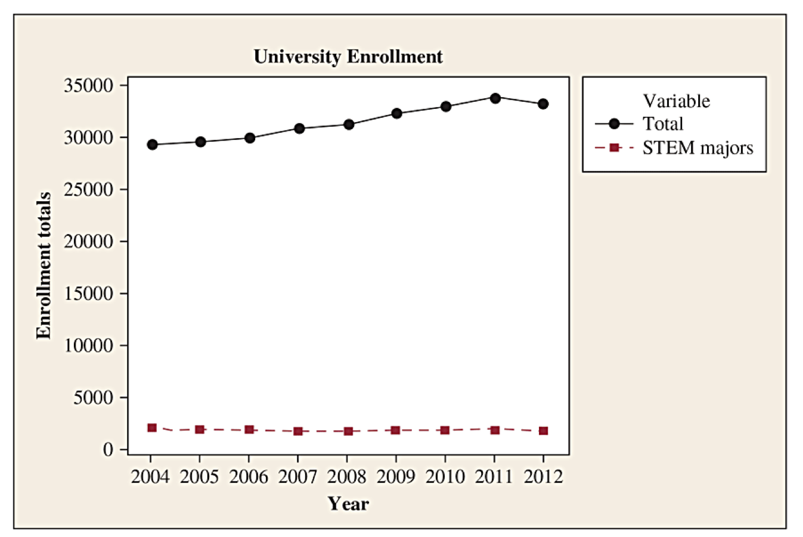
Here are three graphs from a Medium blog post about bad graphs. What do you notice?
Source: https://medium.com/@Ana_kin/graphs-gone-wrong-misleading-data-visualizations-d4805d1c4700
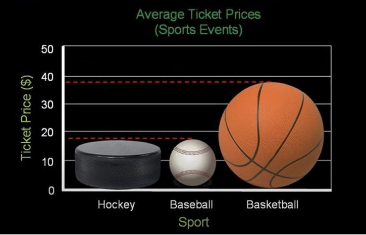
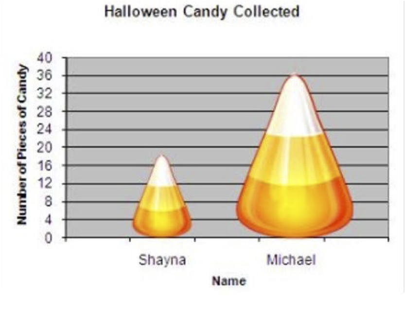
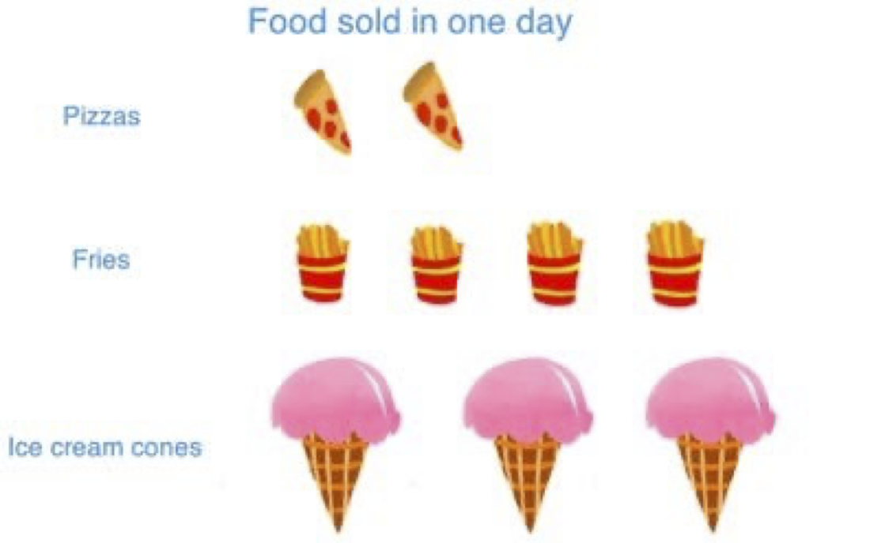
Here is an example from another author showing the number of books circulated at three different libraries. What do you notice?
Source: https://www.lrs.org/2020/06/10/visualizing-data-manipulating-the-y-axis/
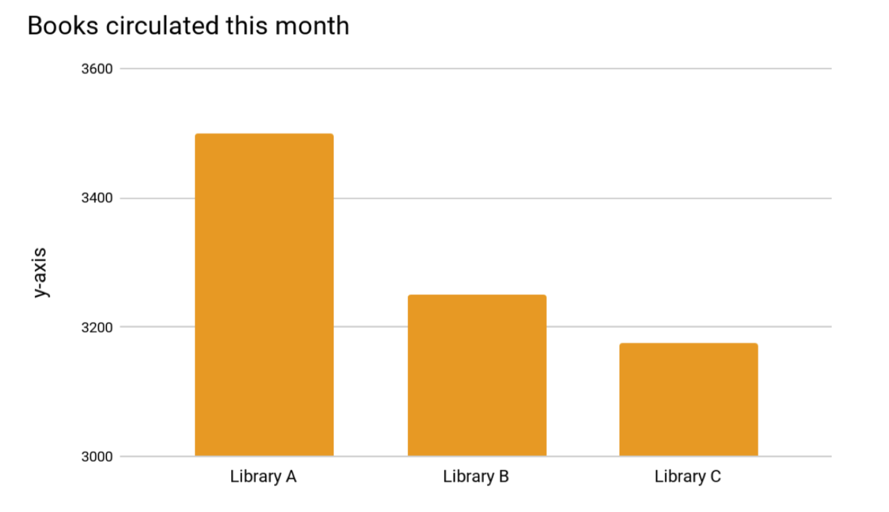
A third blogger gave another example showing brand awareness for three brands as a pie chart. What do you notice here?
Source: https://aspectmr.com/misleading-graphs/
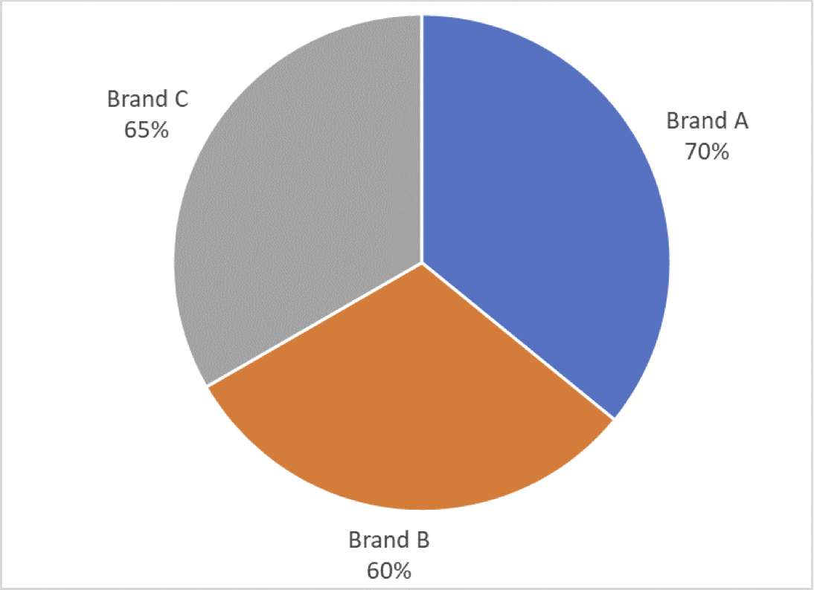
Associations between Explanatory vs Response Variables
Categorical Variables: Looking for Different Conditional Distributions, Use of Contingency Tables
Measuring difference in proportions using percentage points, percent change, and ratios
Quantitative Variables: Comparing summaries of data, comparing distributions, scatter plot and trends
Linear association, correlation, and regression lines
Chapter 3 Introduction: The main purpose of data analysis with two variables is to investigate whether there is an association and to describe that association.
An association exists between two variables if particular values for one variable are more likely to occur with certain values of the other variable.
The response variable is the variable whose outcome is being compared. (The algebra idea here would be the dependent variable.)
The explanatory variable is the variable for which we want to see if its value affects the distribution of the response. If there is a cause/effect relation, the cause is usually the explanatory variable.
For a categorical explanatory variable, we consider how the distribution might change for the different categories (factors).
For a quantitative explanatory variable, we consider how the distribution changes with different values.
Consider the association between carbon dioxide levels and the amount of gasoline use for automobiles.
Consider college students’ GPA values and the number of hours a week spent studying.
Consider food type (organic or conventional) and the presence of pesticides on the food (present or not).
You will need to be able to:
Read and interpret contingency tables
Calculate and interpret proportions and conditional proportions
Create and interpret side-by-side bar charts and stacked bar charts and what we would expect if there is or is not an association
Calculate and interpret the meaning of percentage point difference, percent change, and ratios of proportions to describe associations.
A contingency table displays two categorical variables and associated counts for each pair \((x,y)\) possible.
Rows: list the categories of one variable (usually explanatory).
Columns: list the categories of second variable (usually response).
Entries: count or frequency for the combination of variables.
May also have extended table showing row and column sums. These are called the margins.
| Food Type | Pesticide Present | Pesticide Not Present | Total |
|---|---|---|---|
| Organic | 29 | 98 | 127 |
| Conventional | 19,485 | 7,086 | 26,571 |
| Total | 19,514 | 7,184 | 26,698 |
| Food Type | Pesticide Present | Pesticide Not Present | Total |
|---|---|---|---|
| Organic | 29 | 98 | 127 |
| Conventional | 19,485 | 7,086 | 26,571 |
| Total | 19,514 | 7,184 | 26,698 |
A simple proportion for a combination of values is the ratio of a single cell to the overall total.
A conditional proportion is the ratio a single cell to a row total or column total, depending on which variable is considered given.
Treating the row variables as the explanatory variables (conditioned on rows), the conditional proportions can be used to fill a new table. To be complete, we should show the total frequency or sample size for the row to be able to recreate the original table.
| Food Type | Pesticide Present | Pesticide Not Present | |
|---|---|---|---|
| Organic | 0.23 | 0.77 | \(n=127\) |
| Conventional | 0.73 | 0.27 | \(n=26,571\) |
Notice that the sum of each row equals 1.
You should be able to recreate the original counts by multiplying a conditional probability times the sample size \(n\) for the appropriate row.
The variables have an association if the conditional proportions are different for the different rows. There is no association if the conditional proportions are the same.
Side by side bar charts or stacked bar charts are often used to visualize the conditional proportions. See Figs 3.2 and 3.3 from the textbook:
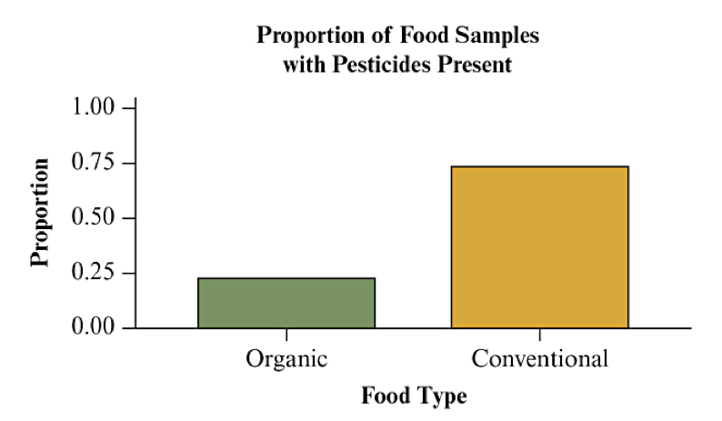
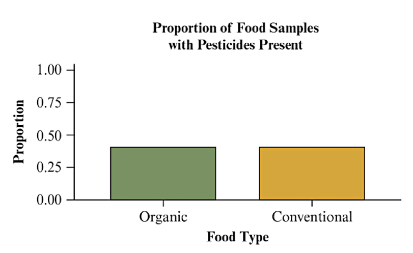
If there is no association, we would expect the proportions to be the same. If there is an association, we would see a different distribution for the two categories.
A difference in proportions or percentages is reported as percentage points. Subtract one percentage from the other.
Comparison Example: Of students who entered JMU in 2018, 79.7% graduated within 6 years. Of students who entered Virginia Tech in 2018, 86% graduated within 6 years.
Because 86%-79.7% = 6.3%, we say Virginia Tech has a graduation rate that is 6.3 percentage points higher than JMU.
A percent change is defined by a formula of the change divided by the reference value:
Comparison Example: Of students who entered JMU in 2018, 79.7% graduated within 6 years. Of students who entered Virginia Tech in 2018, 86% graduated within 6 years.
Virginia Tech has a graduation rate that is 7.9% higher than JMU (base value):
JMU has a graduation rate that is 7.3% lower than Virginia Tech (base value):
A ratio is calculated by simple division of the new value divided by the reference value:
Comparison Example: Of students who entered JMU in 2018, 79.7% graduated within 6 years. Of students who entered Virginia Tech in 2018, 86% graduated within 6 years.
Virginia Tech has a graduation rate 1.079 times the JMU rate (base value):
It is common to report percent change when the ratio is between 0.5 and 2, but to report the ratio directly outside of that range.
We analyze how the response (dependent) variable tends to change as the value of the explanatory (independent) variable changes. If there is no tendency to change, there is no association.
We usually try to describe the way the variables change with each other through a formula, in which case we say there is a relationship between the variables. (This is more precise than just an association.)
Because data has variability, we will be describing an average or expected relationship. Unusual observations (like outliers) may significantly affect results.
The textbook dataset on "Internet Use" includes internet and Facebook penetration (use) in 32 countries. Looking at their distributions separately is informative, but it does not say anything about their association. (Textbook Figure 3.5)
| Variable | N | Mean | StDev | Min | Q1 | Median | Q3 | Max | IQR |
| Internet Use | 32 | 59.2 | 22.4 | 12.6 | 43.6 | 56.9 | 81.3 | 94.0 | 37.7 |
| Facebook Use | 32 | 33.9 | 16.0 | 0.0 | 24.4 | 34.5 | 47.1 | 56.4 | 22.7 |
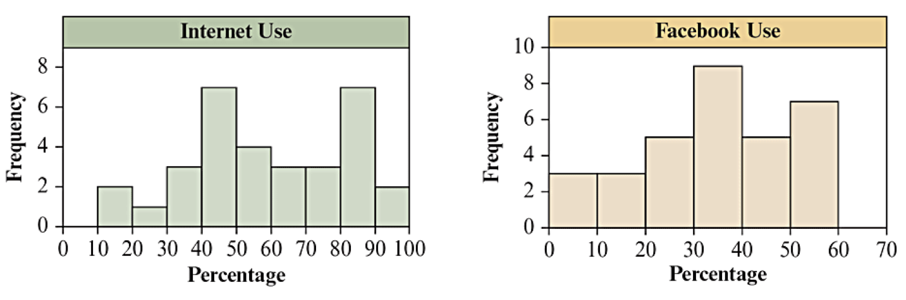
Here is the link to the data file: Internet Usage (CSV)
Which nations, if any, might be outliers in terms of internet use? in terms of Facebook use?
A scatterplot is a graph that will reveal the relationship between two quantitative variables.
In the potential association, each observation consists of a value for each variable.
Horizontal axis: explanatory variable as \(x\) variable
Vertical axis: response variable as \(y\) variable
For each observation, make an \((x,y)\) point and plot it.
Textbook Figure 3.6 shows the scatterplot for Facebook Use vs Internet Use. Japan’s values are annotated with an arrow to highlight the point as being significantly below the general trend that is visible.
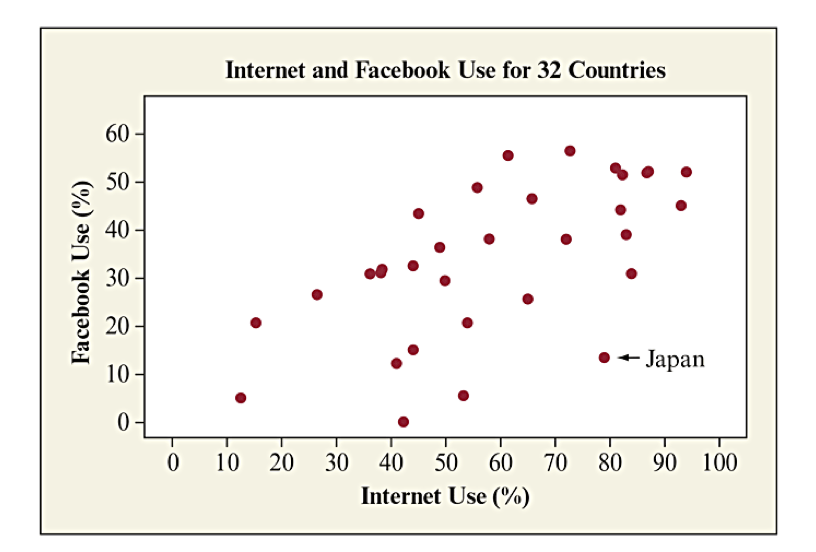
The goal for a scatterplot was to examine the relationship between two variables. We need some terminology for describing our relationship.
Trend: Describing the general shape of the relationship, such as trend is linear, trend is curved or nonlinear, trend shows clusters, or shows no pattern.
Direction: positive, negative, or no direction
Strength: Describes how closely the points fit the trend. A strong relationship has points close to the trend; a weak relationship shows points spread far away from the trend
The word correlation is specifically associated with the strength of a linear relationship. Do not use it for nonlinear relationships or categorical associations.
Textbook Figure 3.7 illustrates different patterns for trends and direction.
positive relation: the trend for the response variable goes up as the explanatory variable goes up.
negative relation: the trend for the response variable goes down as the explanatory variable goes up.
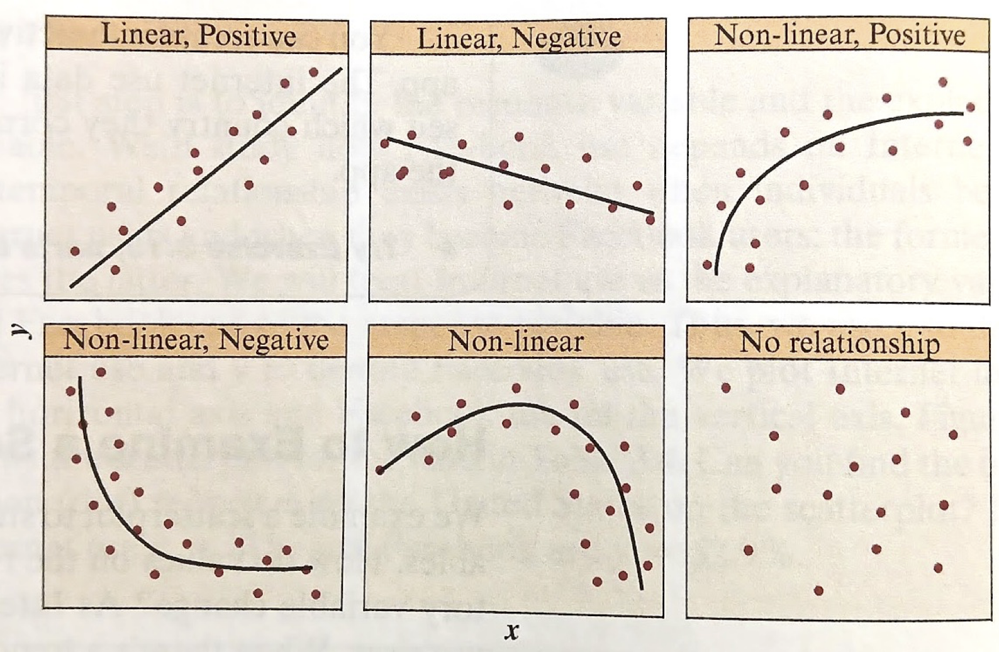
The strength of the relationship characterizes how closely the response variable matches the trend compared to the overall variability of the explanatory variable. It is observed by how tightly the data points match the trend.
For a linear trend, the (linear) correlation coefficient provides a quantitative measure of strength.
The sign of \(r\) matches the direction of the relationship (positive/negative).
The amplitude (absolute value) of \(r\) measures the strength of the association:
\(r \approx 0\) means very weak or no association
\(|r| \approx 1\) is a very strong association.
\(|r| = 1\) means a perfect relation (no variability)
Textbook Figure 3.9 illustrates different correlation coefficients to get a sense of different strengths of associations.
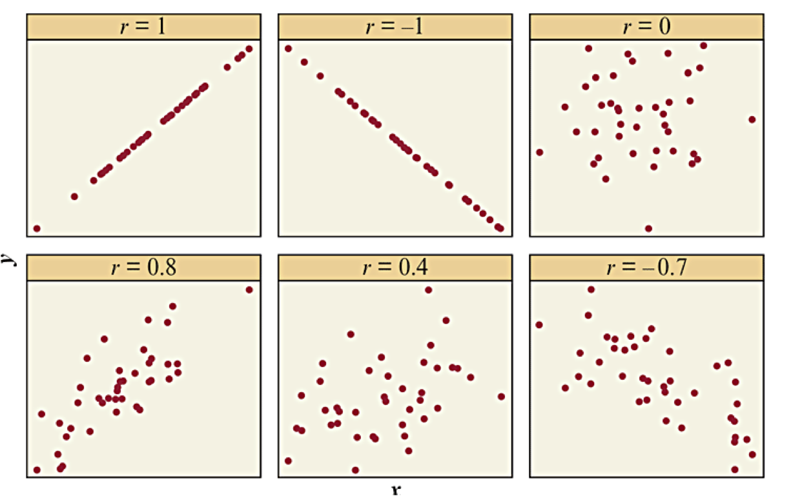
Value of \(r\) always falls between -1 and 1
The sign of \(r\) reveals direction.
Correlation has no units and does not depend on which units were used to measure the variables.
The value of \(r\) does not depend on which variable is explanatory and which is response.
Correlation is not resistant to outliers, and outliers can greatly influence \(r\text{.}\)
As defined, \(r\) only measures the strength of a linear relationship.
Goal of regression: find the best relation (formula) to describe the trend.
The best relation is interpreted as minimizing the sum of squared residuals.
For a linear regression, we are generating a trend line using \(\hat{y} = a + b x\text{,}\) where \(a\) and \(b\) are the regression coefficients. You will learn how to interpret the two coefficients.
The values of \(a\) and \(b\) can be calculated from the data. You will learn the formulas and how to use summary statistics to compute them.
You will learn the connection between the correlation coefficient, the slope parameter \(b\text{,}\) and the value of \(r^2\text{,}\) interpreted as proportion of variation explained by the trend line.
Declare variables:
\(x\) refers to the explanatory variable
\(y\) refers to the response variable (actual data)
The regression line is the graph of an equation \(\hat{y} = a + b x\text{.}\)
\(a\) = \(y\)-intercept, or predicted value when \(x=0\)
\(b\) = slope, or value \(\hat{y}\) changes per unit change in \(x\)
The regression model allows us to take any value of \(x\text{,}\) evaluate the formula, and the resulting value is \(\hat y\text{,}\) the predicted value for \(y\) associated with \(x\text{.}\)
Actual values \(y\) have variation away from \(\hat y\)
Predictions are more reliable in the middle of regions with data.
Extrapolation is when we use a model outside of the regions with data. The further away from the data, the less reliable the prediction.
Description of the model:
\(x\) = length of a femur (thigh bone) in centimeters.
\(y\) = height of subject in centimeters.
\(\displaystyle \hat y = 61.4 + 2.4 x\)
Interpretation:
Use the regression equation to predict the height of a person whose femur length was 50 cm.
Identify and interpret the y-intercept.
Identify and interpret the slope.
The sign of the slope is the same as the direction of the linear relationship:
\(b > 0\) means there is a positive relationship
\(b < 0\) means there is a negative relationship
\(b = 0\) means there is a no association
Question: Would you expect a positive or negative slope when \(y\)=annual income and \(x\)=number of years of education?
For each actual data point \((x,y)\text{,}\) we can calculate the predicted value \(\hat y\text{.}\) Each point has a corresponding residual:
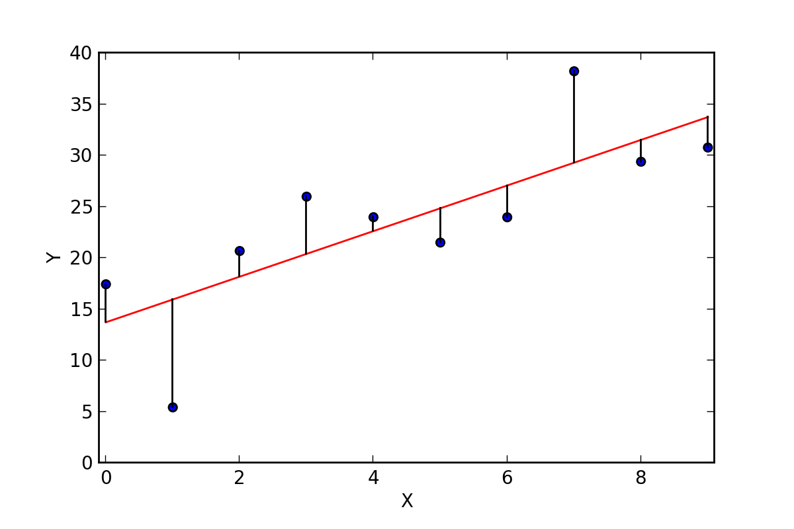
A large residual means the data point is far away from the trend line.
A small residual means the data point is close to the trend line so that the predicted value is a good approximation.
For any line \(\tilde{y} = A + B x\text{,}\) we can compute the residual sum of squares,
Always will be some positive and some negative residuals
Sum of residuals will always be zero (0)
Regression line always passes through \((\overline x, \overline y)\)
Need to know: \(\overline x\) (x mean) and \(s_x\) (x standard deviation), \(\overline y\) (y mean) and \(s_y\) (y standard deviation), and \(r\) (correlation coefficient).
In R, if we have data frame df with a vector of values for \(x\) in x_var and a vector of values for \(y\) in y_var, we can find the model: lm(y_var ~ x_var, data=df).
Remarkably, we also have a relation between \(r^2\) and the deviation sum of squares:
\(r^2 = 1\) means 100% of the variation from the mean is explained by the regression line.
\(r^2 = 0.7\) means 70% of the variation from the mean is explained by the regression line.
\(r^2 = 0\) means 0% of the variation from the mean is explained by the regression line (no relation).
Extrapolation is dangerous!
Be cautious of influential outliers
Correlation (or Association) does Not imply Causation
Lurking variables and confounding variables affect associations and can lead to apparent paradox situations.
Reminder: extrapolation is when we use the regression line to make predictions for \(x\)-values outside the observed range of values.
Riskier the farther we move from the range
No guarantee the relationship will continue to be linear
A regression outlier is an observation that lies far away from the trend relative to other data points. You should always plot the data to see if there might be outliers or other unusual observations.
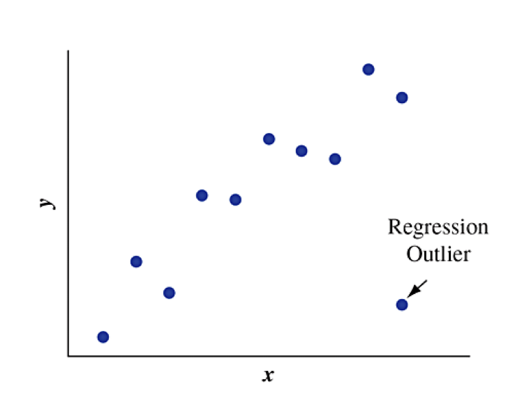
An outlier is an influential outlier if:
its \(x\)-value is relatively high or low compared to the remainder of the data (far from center horizontally)
its \(y\)-value is relatively far from the trend compared to the remainder of the data
The effect of influential outliers is to pull the regression line toward that data point and away from the rest of the data points. It tends to make the slope steeper than it would be without that observation.
Textbook Figure 3.19: Which outlier is influential?
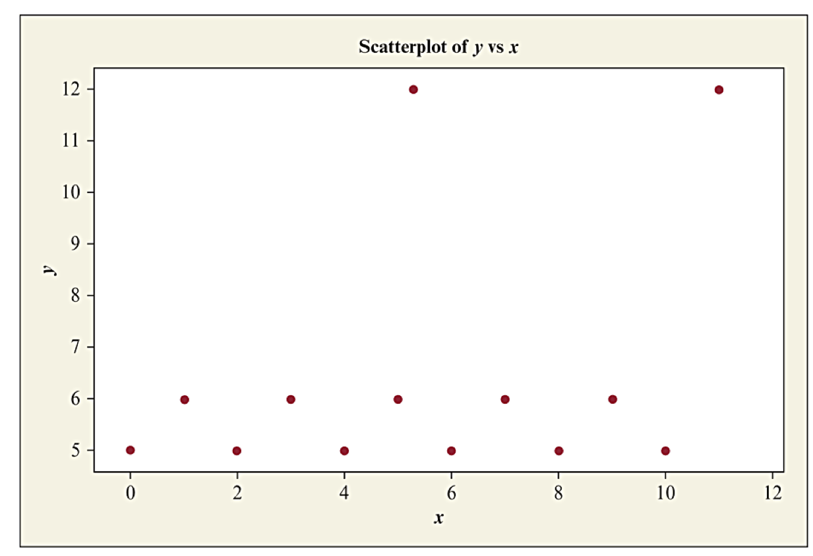
In a regression analysis, suppose that as \(x\) goes up, \(y\) also tends to go up (or down). Can we conclude that there is a causal connection, with changes in \(x\) causing changes in \(y\text{?}\)
NO!
A strong correlation between \(x\) and \(y\) means that there is a strong linear association that exists between the two variables.
A strong correlation between \(x\) and \(y\) does not mean that \(x\) causes \(y\) to change.
Examples of suspicious associations:
High correlation between monthly ice cream sales and monthly drownings
High correlation between shoe size and reading level
A lurking variable is a variable, usually unobserved, that influences the association between the variables of primary interest.
Lurking variables often capture a hidden link that explains the correlation:
Ice cream sales and monthly drownings more likely in hot weather
Shoe size and reading level both increase with age
In practice, there are multiple causes for outcomes, often related to one another. It can be difficult to study the effect of individual variables.
When two explanatory variables are both associated with a response variable but are also associated with each other, there is said to be confounding.
Lurking variables are not measured in a study. They have the potential to be confounding if they were measured.
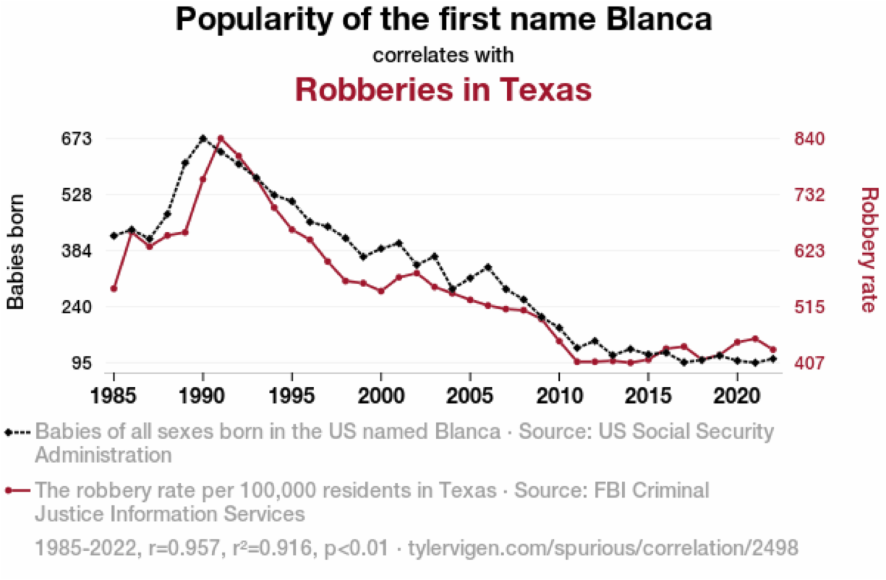
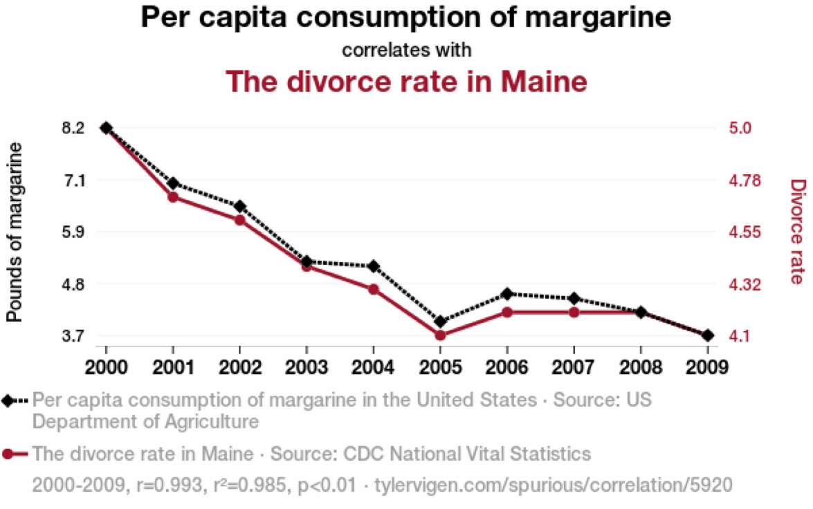
The principle extends to all associations, not just linear regression.
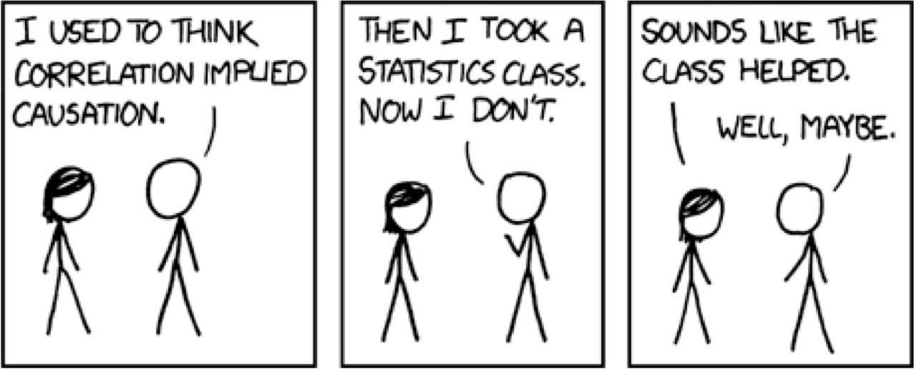
A paradox refers to an apparent contradiction.
Simpson’s paradox occurs when the direction of an association between two variables changes after we include a third variable (often categorical) and analyze the data at separate levels of that third variable.
Baseball example: Compare the 1995 and 1996 batting averages for Derek Jeter and David Justice. If we combine the years, the order reverses.
| Batter | ’95 Hits | ’95 At Bats | ’95 Batting Ave | ’96 Hits | ’96 At Bats | ’96 Batting Ave | Combined Batting Ave |
| Derek Jeter | 12 | 48 | 0.250 | 183 | 582 | 0.314 | 0.310 |
| David Justice | 104 | 411 | 0.253 | 45 | 140 | 0.321 | 0.270 |
A longitudinal study about smoking followed 1,314 women, 582 of whom smoked and 732 of whom did not. The study recorded how many of these individuals were still alive 20 years later.
| Smoker | Dead | Alive | Total |
|---|---|---|---|
| Yes | 139 | 443 | 582 |
| No | 230 | 502 | 732 |
| Total | 369 | 945 | 1,314 |
Is there an association between the variables? Does survival favor smokers or non-smokers?
To compare categories, we need to look at the conditional proportions given the smoking status.
| Smoker | Dead | Alive |
|---|---|---|
| Yes | 23.88% | 76.12% |
| No | 31.42% | 68.58% |
What conclusion can we draw?
Age is a lurking variable in our analysis. The summary grouped all ages together, but death is more likely for the older population. Different age groups also had different proportions that smoked.
| Smoker | Age-Group | Dead | Alive | Survivor | Smoking + Age Group |
| Yes | 18-34 | 5 | 174 | 97.21% |
| No | 18-34 | 6 | 213 | 97.26% |
| Yes | 35-54 | 41 | 198 | 82.85% |
| No | 35-54 | 19 | 180 | 90.45% |
| Yes | 55-64 | 51 | 64 | 55.65% |
| No | 55-64 | 40 | 81 | 66.94% |
| Yes | 65+ | 42 | 7 | 14.29% |
| No | 65+ | 165 | 28 | 14.51% |
Chapter 4 is about how data are collected and how that influences what types of conclusions we can create.
Two broad classes of studies: experimental studies and observational studies
Be able to identify whether a study was experimental or observational.
Discuss advantages and challenges of each type of study.
In an experimental study, a researcher assigns subjects to experimental conditions and then observes the response variables.
The assigned experimental conditions are called treatments.
In an observational study, a researcher observes the values of both the explanatory variables and the response variable for all study subjects.
Nothing is done to the subjects. They are just observed.
A headline read: “Student Drug Testing Not Effective in Reducing Drug Use” in a news release from the University of Michigan.
Facts about the study:
76,000 students nationwide
497 high schools, 225 middle schools
Some included schools tested for drugs, others did not
Each student filled out a questionnaire about his/her drug use
| Drug Tests? | Drug Use Yes | Drug Use No | Total |
|---|---|---|---|
| Yes | 2,092 | 3,561 | 5,653 |
| No | 6,452 | 10,985 | 17,437 |
Was this an observational study or an experiment?
What is the question?
What is the explanatory variable? What is the response variable?
Lurking variables
Observational study: The researcher is at the mercy of how they are distributed among the subjects.
Experiment: Randomization during treatment assignment can reduce potential for impact.
Cause and effect
Observational study: Might find an association, but association does not imply causation.
Experiment: Directly manipulating treatments allows research to study effect of explanatory variable.
Practicalities
Not ethical to expose some subjects to something that we suspect might be harmful (assign treatment), but observations of existing exposure is reasonable.
Subjects can be unreliable to follow a treatment protocol, especially over long time periods. Observing behavior does not require strict control.
Experiment may take too long, but observation can look at older records.
Informal observations are called anecdotes.
There is no way to determine if anecdotes are representative of what happens for an entire population. “The plural of anecdote is not data”
Do not draw conclusions from anecdotal evidence. Reputable studies adopt methodologies to ensure that their data is representative.
A sample survey selects a sample of people from a population and collects data from them (observational study). Contrast this with a census which aims to collect data from every member of a population.
We will learn about how sampling should occur to get good results
Understand sampling frame and sampling design
Understand a simple random sample and how to perform it in practice
Sources of bias in surveys and the different types of bias.
Cautions about sampling strategies
When we want to draw conclusions from the results of a survey (inference), we need to know that the sample is representative of the population.
Proportions observed in the sample should be close to proportions of reality. If we randomly select subjects from the population, then with a large enough sample, the distributions from our sample will resemble the distributions from the population.
A mismatch between the distributions of our sample and that of the population is called bias and results in estimates and conclusions that are invalid.
The sampling frame is the list of all subjects that can be selected.
Ideal: every individual in the population is listed
Practice: can be difficult to identify every individual
The sampling design is the strategy used to select subjects for the sample. The sample size is the number of subjects in the sample and is often denoted by the symbol \(n\text{.}\)
A simple random sample of size \(n\) is one in which every potential sample of size \(n\) has the same probability of being selected. It is often simply called a random sample.
Strategy:
Number all subjects in the sampling frame (1, 2, 3, etc.).
Generate a set of numbers randomly. In R, use sample(N,n), where \(N\) is the size of the sampling frame and \(n\) is the size of the sample.
Sample the subjects that correspond to the numbers.
For surveys of people, it is especially difficult to get a good sampling frame because a list of all adults in a population rarely exists (and is often changing). So we pick an alternative:
Use addresses (place of residence), such as US Census
Use telephone numbers
Other methods?
Once we identify individuals, how do we get answers?
Interview in person
Interview by telephone
Self-administered questionnaire
When results from the sample are not representative of the population, they are said to exhibit bias. When the source of the bias is because of how the sample was chosen, it is sampling bias.
Undercoverage bias: having a sampling frame that lacks representation from some parts of the population.
Nonresponse bias: some subjects cannot be reached or refuse to participate or fail to answer some questions.
Response bias: some subjects give an incorrect response (perhaps lying) or the way the questions are asked is confusing or misleading.
1936 Roosevelt vs Landon; Literary Digest predicted Landon would win in a landslide
1948 Truman vs Dewey; Early use of telephone surveys, premature end of polling
Photos of Alfred Landon and Thomas Dewey courtesy Wikipedia
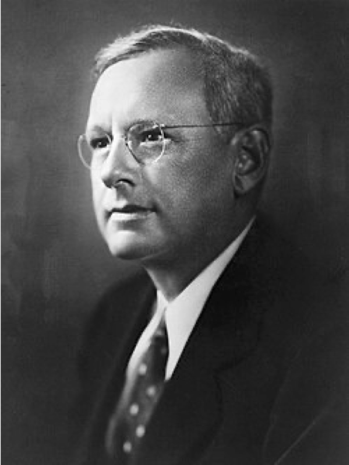
Convenience Sample: a type of survey sample that is chosen because it is easy to obtain at low cost.
Unlikely to be representative
Often results in severe biases
Results apply only to the observed subjects
Volunteer Sample: example of convenience sample where subjects volunteer
Volunteers do not tend to be representative of the entire population
Internet surveys are often volunteer samples. Even with large sample sizes, the sample is not representative.
A Large Sample Size Does Not Guarantee an Unbiased Sample
Identify the population of all subjects of interest.
Define a sampling frame which attempts to list all subjects.
Use a random sampling design to select \(n\) subjects.
Be cautious about sampling bias, response bias, and non-response bias.
We can make inferences about the population when random sampling is used.
Using simple random sampling requires that the sample size is big enough that all parts of the population are adequately sampled. This can result in some parts of the population being oversampled compared to others. We can create alternative sampling designs that can be more efficient and less expensive.
Cluster random sampling: Identify clusters of subjects instead of actual subjects. Select a random sample of clusters and survey all subjects in chosen clusters.
Stratified random sampling: Divide the population into separate groups based on some attribute, which are called strata Select a simple random sample of subjects from each stratum.
Identify clusters of subjects instead of actual subjects. Select a random sample of clusters and survey all subjects in chosen clusters. (See textbook Figure 4.2)
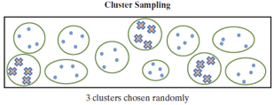
Examples of clusters:
Geography: counties, census tracts
Buildings: nursing homes, hospitals, apartments
Advantages:
Preferable if a reliable sampling frame is not available.
Preferable if cost of selecting a simple random sample is excessive.
Disadvantages:
Usually requires a larger sample size compared to a comparable precision from a simple random sample.
Selecting a small number of clusters might not be representative of the population (homogeneous = lacks diversity)
Divide the population into separate groups based on some attribute, which are called strata Select a simple random sample of subjects from each stratum. (See textbook Figure 4.2)
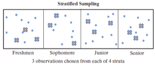
Examples of strata:
Student status: freshmen, sophomores, juniors, seniors
Employment status: unemployed, part time, full time hourly, full time contract
Income levels: below poverty, lower class, middle class, upper class
Advantages:
Can include in your sample enough subjects in each group you want to evaluate.
Disadvantages:
Must have a sampling frame and know the stratum into which each subject belongs
An experiment assigns a treatment to each experimental unit (subject)
We will learn about key elements of experimental design
Control group and treatment groups
Role of randomization and generalization
Placebo effect and blinding studies
To avoid just collecting anecdotes, the researcher needs to assign different treatments to different groups in order to make comparisons.
Treatment: An experimental condition that is assigned to experimental units.
Control: A treatment that is neutral or is expected to result in no change.
Goal: Investigate an association by exploring how the treatment affects the response. Provides stronger evidence for causation.
The explanatory variable corresponds to the values the treatment changes and defines the groups to be compared. The response variable corresponds to the measured outcome or result of the experiment.
We need to separate the response to receiving a treatment from the result of the treatment. The subjects should still be given something, just without active ingredients, called a placebo.
ingestion of sugar pills
injection of saline solution
fake surgical procedures
Ethical considerations might require the control group receives an existing baseline treatment instead of no treatment because we minimize added risk to human subjects for participation in experiments.
Lurking variables also exist in experiments. We want to compare results of different treatments, but don’t want the influence of lurking variables to introduce bias. Assignment of treatments is randomized.
Balance groups on variables that you know affect the response.
Balance groups on lurking variable that may be unknown
Prevent assignment bias where one treatment might be given to favorable group.
Textbook example: An analysis of published medical studies about treatments for heart attacks indicated that the new therapy provided improved treatment 58% of the time in studies without randomization and control groups but only 9% of the time in studies having randomization and control groups.
The placebo effect is where people who take a placebo respond better than those who receive nothing, perhaps for psychological reasons. To control for the placebo effect, we don’t want participants to know which treatment they are receiving. This is called a blinded study.
We also do not want researchers to treat different groups differently as that can also bias the results. When the researchers who interact with subjects also do not know which treatment is being administered, it is a double blinded study. Triple blinding occurs when data analysts are also blinded to the assigned treatment.
Studies have reported that regardless of what smokers do to quit, most relapse within a year. Some scientists have suggested that smokers are less likely to relapse if they take an antidepressant regularly after they quit.
Suppose you have 400 volunteers who would like to quit smoking? How can you design an experiment to study whether antidepressants help smokers to quit?
Recall that the goal of experimentation is to analyze the association between the treatment and the response for the population, not just the sample. However, care should be taken to generalize the results of a study only to the population that is represented by the study.
Textbook Exercise 4.34 (Vitamin B): A New York Times article (March 13, 2006) described two studies in which subjects who had recently had a heart attack were randomly assigned to one of four treatments: placebo and three different doses of vitamin B. In each study, after years of study, the differences among the proportions having a heart attack were reported. Identify the (a) response variable, (b) explanatory variable, (c) experimental units, (d) the treatments in this study, and (e) the population for whom results might generalize.
A multifactor experiment uses a single experiment to analyze the effects of two or more explanatory variables on the response variable. Categorical explanatory variables in an experiment are called factors. Multifactor experiments can be more informative because the response might vary for different factor combinations through interactions.
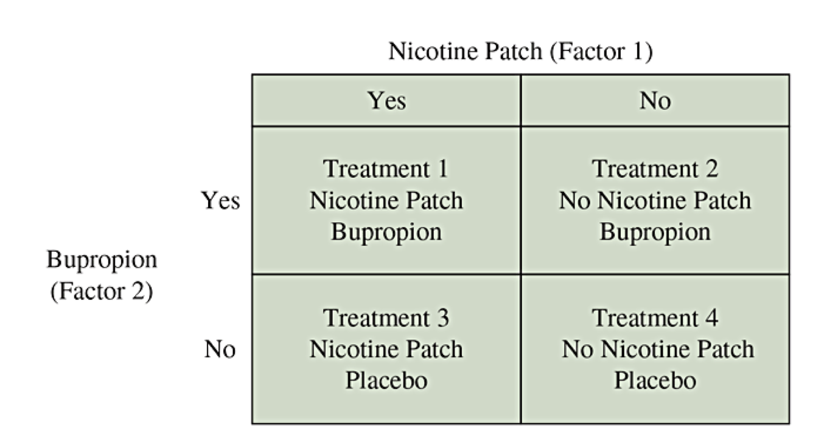
Antidepressants and nicotine patches both might help individuals stop smoking.
Why use both factors at once?
Why not do one experiment about bupropion and a separate experiment about the nicotine patch?
In a matched pairs design experiment, each subject undergoes both treatments sequentially. They start with one treatment and then cross over to the other treatment.
Can remove certain forms of bias
Each pair of observations involve the same lurking variables
The focus is on the change of the response variable.
A block is a set of experimental units (aka subjects) that are matched with respect to one or more characteristics.
A randomized block design is when we separate experimental units into blocks and then randomly assign treatments separately within each block.
Probability gives a framework for describing randomness.
We will learn about key elements of probability
Vocabulary: sample space, event, set notation
Basic properties and rules of probability (union, intersection, complement)
Conditional probability, sequential events, and independence
Bayes Theorem: reversing the sequential thinking
Probability is the mathematical framework for studying random events.
Our intuition begins by thinking about simple random events: counting equally likely possibilities.
The following contingency table categorizes taxpayers (in thousands) according to their income level and whether their taxes were audited.
| Income Level | Audited=Yes | Audited=No | Total |
|---|---|---|---|
| Under $200,000 | 839 | 141,686 | 142,525 |
| $200,000-$1,000,000 | 72 | 6,803 | 6,875 |
| More than $1,000,000 | 23 | 496 | 519 |
| Total | 934 | 148,986 | 149,919 |
Not every possibility for every random event of interest is equally likely. We need to create a method to generalize the ideas.
Sample Space: The set of all possible elementary outcomes, usually \(S\) or \(\Omega\text{.}\)
Event: A subset of the sample space for which we can find probabilities.
Set Notation: When we can list possible outcomes, a set is written with curly braces { } and the outcomes separated by commas. Alternatively, we can state a rule inside the curly braces for what it means to belong.
Probability of Event: For each event, which is a subset \(A\text{,}\) we will define the probability \(P(A)\) as a number from 0 to 1.
| Income Level | Audited=Yes | Audited=No | Total |
|---|---|---|---|
| Under $200,000 | 839 | 141,686 | 142,525 |
| $200,000-$1,000,000 | 72 | 6,803 | 6,875 |
| More than $1,000,000 | 23 | 496 | 519 |
| Total | 934 | 148,986 | 149,919 |
Define the sample space, several events of interest, and state the probabilities of those events using \(P(A)\text{.}\)
First, we have basic rules of probability.
An event can be empty, \(A = \emptyset = \{ \}\text{:}\) \(P(\emptyset) = 0\)
An event can be everything, \(A = S\text{:}\) \(P(S) = 1\)
For every event \(E\text{:}\) \(0 \le P(E) \le 1\)
Second, we need rules for combining events. Let \(A\) and \(B\) be two events (i.e., subsets).
The complement of an event \(A\text{,}\) written \(A^c\) or \(A'\text{,}\) is every outcome that is not in the event. This is the sample space with outcomes in \(A\) removed.
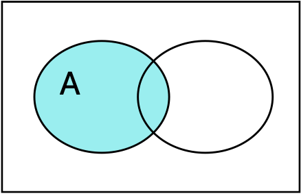
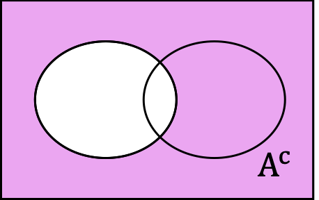
The union of \(A\) and \(B\text{,}\) written \(A \cup B\text{,}\) is every outcome that is in at least one of the sets. This is the sum of the outcomes, counting any duplicates only once.
The intersection of \(A\) and \(B\text{,}\) written \(A \cap B\text{,}\) is every outcome that is in both of the sets. This is the set of overlapping outcomes.
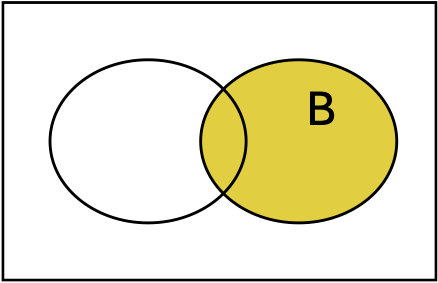
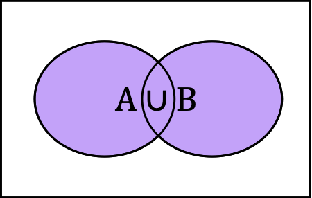
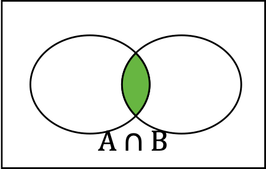
Two events \(A\) and \(B\) are said to be disjoint if \(A \cap B = \emptyset\) (empty overlap). For any two disjoint sets, we have
| Income Level | Audited=Yes | Audited=No | Total |
|---|---|---|---|
| Under $200,000 | 839 | 141,686 | 142,525 |
| $200,000-$1,000,000 | 72 | 6,803 | 6,875 |
| More than $1,000,000 | 23 | 496 | 519 |
| Total | 934 | 148,986 | 149,919 |
Find the probability that:
a tax return reflects an individual in the lowest or the highest bracket.
a tax return reflects an individual in the lowest in come bracket or that the individual’s return is audited.
Conditional probability occurs when we are calculating a probability restricted to a given event. We treat that given event as if it were the new sample space and only consider outcomes that would be in that event. This requires using intersection.
Let \(A\) and \(B\) be two events. We define the conditional probability of \(A\) given \(B\) as the probability of outcomes in A when we know we are restricted to B:
| Income Level | Audited=Yes | Audited=No | Total |
|---|---|---|---|
| Under $200,000 | 839 | 141,686 | 142,525 |
| $200,000-$1,000,000 | 72 | 6,803 | 6,875 |
| More than $1,000,000 | 23 | 496 | 519 |
| Total | 934 | 148,986 | 149,919 |
Find the conditional probability that:
a tax return is audited given that the tax payer is in the lowest bracket.
a tax return is in the lowest bracket given that the tax return is audited.
The definition of conditional probability can be rewritten as a product:
It could have also been defined symmetrically:
| Income Level | Audited=Yes | Audited=No | Total |
|---|---|---|---|
| Under $200,000 | 839 | 141,686 | 142,525 |
| $200,000-$1,000,000 | 72 | 6,803 | 6,875 |
| More than $1,000,000 | 23 | 496 | 519 |
| Total | 934 | 148,986 | 149,919 |
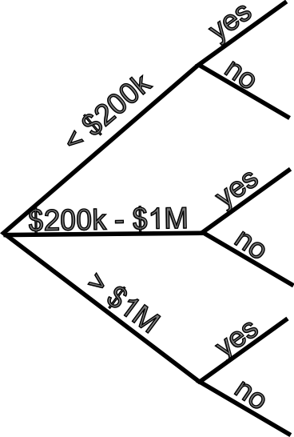
Use sequential reasoning to find the conditional probability that:
a tax return is audited given that the tax payer is in the highest bracket.
a tax return is in the highest bracket given that the tax return is audited.
Tests to determine the presence of an illness, a drug, or other condition are called diagnostic tests. The success rates for the test are defined using conditional probabilities which are given specific names.
Sensitivity is the conditional probability to successfully detect the condition given that is is actually present.
Specificity is the conditional probability that the test successfully responds negatively given the condition is actually absent.
COVID rapid antigen tests have an average sensitivity of 69.3% and an average specificity of 99.3%. Suppose COVID is actively spreading so that 5% of the population is currently infected.
Fill out the contingency table for conditional probabilities based on sensitivity and specificity.
Fill out the contingency table for probabilities of each joint state.
Two events \(A\) and \(B\) are independent if
Independence means that the events are not associated. Knowing if an outcome is in one event does not give you any information on whether it is more or less likely that the outcome is in the other event.
Do not assume that two events are independent unless you have clear reasons for believing this. You should by default use sequential reasoning and conditional probabilities.
Consider a 3 question multiple choice quiz. Each question has 5 possible answers. Suppose you randomly guess on each question, so that your guessing the correct answer on any given question is independent of the other questions.
Find the probability that I pass the test (at least 2 out of 3 correct).
Random variables are the mathematical formulation for describing variables that are subject to random variability at the population level.
We will learn about following key ideas:
Vocabulary: random variable, distribution, continuous vs discrete
Calculating expected values (mean, variance, standard deviation)
Key properties of binomial random variables
A random variable is a way to assign a numeric value to each outcome in the sample space, so that randomly selecting an outcome corresponds to a number.
Example: Flip a coin 3 times and record flips (Heads or Tails)
Sample space: collection of all possible (\(2 \cdot 2 \cdot 2 = 8\)) sequence of flips \(\{ HHH, HHT, HTH, HTT, THH, THT, TTH, TTT \}\)
Random variable: How can we assign a number to each outcome?
Number of heads
Maximum number of consecutive sequence of heads
Number of heads minus number of tails
A random variable for which we can list all of the possible values is called discrete. If the random variable can take any value from an interval, it is called continuous.
The distribution of a discrete random variable is the function defining probabilities associated with each of the possible values for the variable. We usually use \(p(x)\) where \(p\) is the distribution function (called the probability mass function) and \(x\) represents a possible value.
Example: For each random variable defined on the three coin flips sample space, describe the distribution of the random variables.
\(X\) = number of heads
\(Y\) = maximum number of consecutive heads
\(Z\) = number of heads minus number of tails
Given a random variable \(X\text{,}\) we can define the expected value of \(X\) as the theoretical mean (population parameter), usually written \(\mu_X\) or just \(\mu\) (if there is only one variable). We can also use the expectation operator that calculates the expected value, written \(E[X]\text{.}\)
The expected value is calculated by adding over all possible variable values the value of \(X\) times the probability it has that value.
Example: For the 3 coin flips, calculate \(\mu\) for the number of heads.
Example: For a roll of a single 6-sided die, calculate \(\mu\) for the number of pips (dots) on the top face.
Recall that for a sample, we can compute the sample variance as an average squared deviation. For a random variable representing a theoretical population, we can compute the variance (parameter), usually written \(\sigma^2\) or \(\sigma_X^2\) using expectation.
Example: For the 3 coin flips, we found \(\mu = 1.5\) for the number of heads. Find the variance \(\sigma^2\) and standard deviation \(\sigma\text{.}\)
Example: For a roll of a single 6-sided die, we found \(\mu = 3.5\text{.}\) Find the variance \(\sigma^2\) and standard deviation \(\sigma\text{.}\)
On October 2, 2025, the Virginia MegaMillions lottery had a jackpot value worth $520 million. Each ticket costs $5. The lottery website identified the possible prizes along with their probabilities for winning.
Find the expected value of the net winnings (value of prize won minus cost of ticket).
| Prize | Value | Probability |
| 5 of 5 + MegaBall | $520,000,000 | 1/290,472,336 |
| 5 of 5 | $1,000,000 | 1/12,629,232 |
| 4 of 5 + MegaBall | $10,000 | 1/893,761 |
| 4 of 5 | $500 | 1/38,859 |
| 3 of 5 + MegaBall | $200 | 1/13,965 |
| 3 of 5 | $10 | 1/607 |
| 2 of 5 + MegaBall | $10 | 1/665 |
| 1 of 5 + MegaBall | $7 | 1/86 |
| MegaBall | $5 | 1/35 |
A random variable is called continuous when its possible values form an interval.
Examples: time, age, and size measures such as height and weight.
Continuous variables are usually measured in a discrete manner because of rounding.
The distribution of a continuous random variable can not assign probability to individual values. (Paradox: The only way that might make sense is that any specific value has probability 0.) Instead, we define probabilities for intervals in which the value can belong instead of individual values.
To fully understand this idea, we would need calculus. But for continuous random variables, there is a function called the density that is always positive (or zero) such that the area under its graph is exactly equal to 1.
If \(X\) is our random variable, then \(P(a \le X \le b)\) will be equal to the area under the density’s graph in the interval \(a \le x \le b\text{.}\)
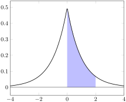
The most important continuous random variable is said to follow the normal distribution and has the fundamental bell-shaped distribution. A normal distribution can be defined with any mean \(\mu\) and standard deviation \(\sigma\text{.}\)
The graph is symmetric around \(x=\mu\) and the width of the bell is proportional to \(\sigma\text{.}\)
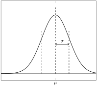
For any normal random variable with mean \(\mu\) and standard deviation \(\sigma\text{,}\) which is indicated by writing \(X \sim \mathcal{N}(\mu,\sigma)\text{,}\) we normalize by finding
In order to calculate probabilities for \(X\) to be in \(a \lt X \lt b\text{,}\) we calculate the z-value for \(a\) and \(b\) and use the standard normal distribution.
The left-tail probability is defined by a probability \(P(X \lt a)\text{.}\) The right-tail probability is defined by a probability \(P(X \gt a)\text{.}\) Single numbers have no probability, \(P(X = a) = 0\text{.}\)
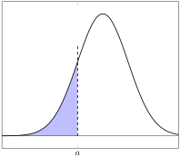
Using the probability rule for complements and for disjoint events:
The left-tail probabilities for the standard normal distribution are calculated and recorded in tables (called cumulative probability). We can use standardization and these tables to calculate other probabilities.
For \(X \sim \mathcal{N}(0,1)\text{,}\) find \(P(0 \lt X \lt 1)\text{.}\)
For \(X \sim \mathcal{N}(0,2)\text{,}\) find \(P(1 \lt X \lt 3)\text{.}\)
For \(X \sim \mathcal{N}(2,3)\text{,}\) find \(P(-2 \lt X \lt 2)\text{.}\)
When we have a distribution (discrete or continuous), we can find quantiles or percentiles.
Given a random variable \(X\) and a proportion \(p\) with \(0 \lt p \lt 1\text{,}\) the \(p\) quantile is the value \(x\) so that \(P(X \le x) = p\text{.}\) Multiplying \(p\) by 100, \(100p\) is a percentage and so we also call \(x\) the \(100p\)th percentile.
We can read the probability table to also find quantiles of a standard normal distribution.
Find the \(0.8\) quantile of \(Z \sim \mathcal{N}(0,1)\text{.}\)
Find the \(0.95\) quantile of \(Z \sim \mathcal{N}(0,1)\text{.}\)
Find the 12th percentile of \(Z \sim \mathcal{N}(0,1)\text{.}\)
The calculation of \(Z = \frac{X-\mu}{\sigma}\) converts from \(X \sim \mathcal{N}(\mu,\sigma)\) to \(Z \sim \mathcal{N}(0,1)\text{.}\) We can reverse the transformation. Given \(Z\text{,}\) we find \(X = \mu + Z \cdot \sigma\text{.}\)
If we find a \(p\)-quantile \(q\) for \(\mathcal{N}(0,1)\text{,}\) then \(\mu + q \cdot \sigma\) is the \(p\)-quantile for \(\mathcal{N}(\mu,\sigma)\text{.}\)
Find the \(0.9\) quantile of \(X \sim \mathcal{N}(2,1)\text{.}\)
Find the \(0.99\) quantile of \(X \sim \mathcal{N}(1,2)\text{.}\)
Find the 25th percentile of \(X \sim \mathcal{N}(-2,5)\text{.}\)
If we take a quantitative variable in a sample, we can consider the observed values to be instances of a random variable. Every sample statistics (like mean, median, and standard deviation) are themselves random variables. We call their distributions sampling distributions.
We will learn about following key ideas:
Find the mean and standard deviation of a sample mean.
The sample mean of a sample of independent and identical normal random variables is itself a normal random variable.
The central limit theorem shows that for any distribution, the larger the sample size, the closer the sample distribution will be to the normal distribution.
If we have a set of independent and identically distributed random variables \(X_1, X_2, \ldots, X_n\) that share the distribution of \(X\text{,}\) the collection \(\{X_1, X_2, \ldots, X_n\}\) is called a random sample. Every time we create a random sample, the specific values will be different. This is called sampling variability.
For any statistic summarizing the sample, the value of the statistic is also random. That is, a statistic of a random sample is itself a random variable. The distribution of that statistic is called the sampling distribution.
R has the ability to simulate many different types of random variables. Creating random samples use a command that starts with r (for random) followed by an abbreviation of the distribution name: rnorm, runif, rbinom, etc. We also specify the sample size and any model parameters.
x <- rnorm(100, mean=2, sd=5)
x <- runif(100, min=0, max=1)
x <- rbinom(100, size=5, prob=0.5)
For a given random sample, a statistic produces a single value. To understand the sampling distribution, we should replicate the sample many times to create a sample of samples.
We will use a loop to generate our replicate and store the individual sample statistics in a vector.
n <- 100
numSamples <- 500
sample.means <- numeric(numSamples)
for (i in 1:numSamples) {
x <- rnorm(n, mean=5, sd=2)
sample.means[i] <- mean(x)
}
The Law of Large Numbers allows us to consider an event \(E\) involving a random variable \(X\) as follows. If we take a random sample \(X_1,X_2,\ldots,X_n\) with the same distribution as \(X\text{.}\) The proportion of values from the random sample that make \(E\) true will approach the actual probability \(P(X \in E)\text{.}\) Further, the sample mean will converge to the expected value (population mean).
Consequently, a histogram will approximately take the same shape as the distribution’s density function. The larger the sample size, the closer it will look.
The sample mean \(\overline{X}\) is a statistic based on a sample \(X_1, X_2, \ldots, X_n\) calculated by
The variance of \(\overline{X}\) is also related to the variance of \(X\text{.}\)
Consequently, the standard deviation of \(\overline{X}\) is
If the random sample is for a normal distribution, then \(\overline{X}\) is itself also a normally distributed random variable.
That is, if \(X_1, X_2, \ldots, X_n \sim \mathcal{N}(\mu,\sigma)\text{,}\) then
For any other distribution, \(\overline{X}\) is not the original distribution nor is it the normal distribution. But the distribution is close to a normal distribution for a large sample size.
The Central Limit Theorem guarantees for us that the larger the sample size, the closer the distribution will be to a normal distribution. Consequently, for large enough sample size, we can use a normal distribution to calculate approximate probabilities. In practice as a rule of thumb, this is usually valid for \(n > 30\text{.}\)
If the distribution of \(X\) is approximately normal \(\mathcal{N}(\mu,\sigma)\) to begin with, then we know \(\overline{X}\) is also approximately normal \(\mathcal{N}(\mu, \frac{\sigma}{\sqrt{n}})\text{.}\)
Even if the distribution of \(X\) is significantly different from a normal distribution, then for large \(n \ge 30\text{,}\) we can still use \(\mathcal{N}(\mu, \frac{\sigma}{\sqrt{n}})\) to calculate approximate probabilities regarding \(\overline{X}\text{.}\)